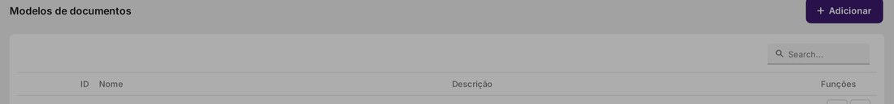
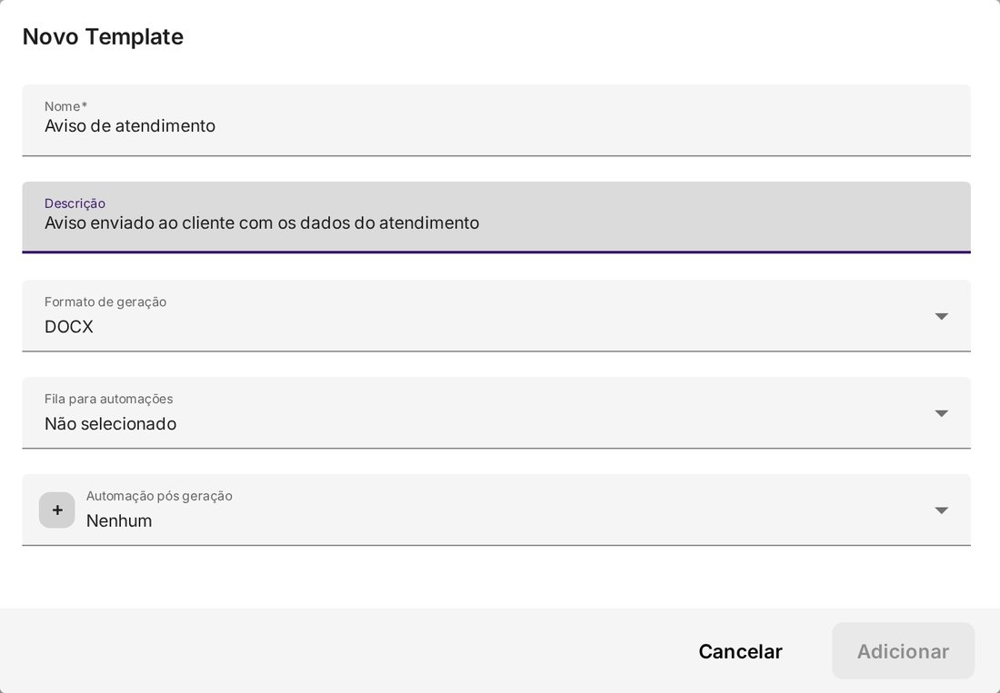

Documentos a partir de um Modelo
Crie um modelo do Word (.docx) com variáveis do atendimento e gere documentos em DOCX ou PDF — pelo CRM, por uma tarefa ou dentro de uma automação, inclusive disparando um aviso ao cliente.
O que é um modelo de documento
É um arquivo do Word (.docx) cadastrado no sistema que serve de molde: dentro dele você escreve o texto e insere variáveis entre chaves duplas — por exemplo {{chat_client_name}}. Na hora de gerar, o sistema substitui cada variável pelo dado real e entrega o arquivo no formato escolhido (DOCX ou PDF).
- Arquivo-base: apenas .docx, com até 4 MB.
- Formato de saída: DOCX ou PDF. Mesmo escolhendo PDF, o arquivo enviado continua sendo o .docx — o sistema converte depois de preencher.
- Campos do modelo: Nome (obrigatório), Descrição (opcional), Formato de geração, Fila para automações (opcional), Automação pós geração (opcional) e o arquivo Documento.
Onde fica
A lista de modelos fica em Configurações > Cadastros > Modelos de documentos. A grade mostra ID, Nome, Descrição e as Funções (editar e excluir), com o botão + Adicionar no topo.

Passo 1 — Criar o arquivo-base (.docx) com as variáveis
Escreva o documento no Word normalmente e insira as variáveis onde os dados devem aparecer. Para o exemplo de aviso ao cliente, o conteúdo do .docx é este:
AVISO DE ATENDIMENTO
Olá, {{chat_client_name}}!
Registramos o seu atendimento sob o protocolo {{chat_protocol}}.
Confirmamos o contato pelo telefone {{chat_client_number}}.
Este é um documento de teste gerado automaticamente a partir de um modelo.
Se precisar de algo, basta responder esta mensagem.
Atenciosamente,
Equipe de AtendimentoVariáveis usadas neste exemplo:
| Dado | Variável |
|---|---|
| Nome do cliente | {{chat_client_name}} (ou clientName) |
| Número / telefone | {{chat_client_number}} (ou clientNumber) |
| Protocolo do atendimento (ID do chat) | {{chat_protocol}} |
Baixar o modelo de exemplo (.docx) — pronto, com as três variáveis, para usar como base.
Passo 2 — Cadastrar o modelo
- Abra a tela. Acesse Configurações > Cadastros > Modelos de documentos e clique em + Adicionar.
- Nome. Um nome para identificar o modelo (ex.: Aviso de atendimento). É obrigatório.
- Descrição (opcional). Explique para que o modelo serve.
- Formato de geração. Escolha DOCX ou PDF — o formato em que o documento final será entregue.
- Fila para automações (opcional). Só aparece quando o recurso de automações está habilitado; é a fila usada pelas automações vinculadas a este modelo.
- Automação pós geração (opcional). Uma automação que roda toda vez que um documento é gerado a partir deste modelo (de forma isolada, apenas com o arquivo pronto).
- Documento. Clique em "Clique para selecionar o arquivo..." e escolha o
.docxdo Passo 1 (máx. 4 MB). - Salvar. O botão Adicionar só habilita com o Nome e o arquivo preenchidos.

Passo 3 — Gerar o documento
A) Por automação (atendimento ou URA)
- Abra Configurações > Fluxo de Automação e URA e crie ou abra um fluxo.
- Adicione o elemento Gerar documento a partir de um modelo. Nele, selecione o modelo cadastrado no Passo 2 e informe o nome da variável de resultado (sem chaves duplas), que vai guardar o ID do arquivo gerado.
- Adicione o elemento Enviar mensagem para levar o aviso ao cliente. O texto aceita variáveis, por exemplo:
O arquivo gerado pode ser anexado à mensagem pela variável de resultado definida no passo anterior.Olá, {{chat_client_name}}! Seu atendimento ({{chat_protocol}}) foi registrado. Segue o documento. - Salve e publique o fluxo. Quem dispara a geração é o gatilho do próprio fluxo.
B) Pelo CRM
- No formulário do funil (aba Geral), marque o modelo em Templates de Documentos para que ele apareça nas oportunidades daquele funil.
- Na tela da oportunidade, use a ação de gerar documento — o arquivo é criado a partir dos dados da oportunidade.
- Se houver Automação pós geração configurada no modelo, ela roda em seguida.
C) Por uma tarefa
A geração também pode partir de uma tarefa: o mesmo recurso de modelo é usado, tomando como base os dados da tarefa.
Passo 4 — Testar e conferir
- Dispare o fluxo (ou gere pela oportunidade/tarefa) em um atendimento de teste.
- Confira se a mensagem de aviso chegou com o nome, o telefone e o protocolo preenchidos.
- Se o documento não for gerado, abra o Visualizador de debug do fluxo e verifique o elemento Gerar documento a partir de um modelo e o valor das variáveis.
Variáveis úteis
| Dado | Variável |
|---|---|
| Nome do cliente | {{chat_client_name}} (ou clientName) |
| Número / telefone | {{chat_client_number}} (ou clientNumber) |
{{chat_client_email}} (ou clientEmail) | |
| Protocolo do atendimento | {{chat_protocol}} |
| Nome do contato (via contato) | {{chat_contact.contact_name}} |
A lista completa e atualizada fica no próprio editor de fluxo, nos botões Informações de variáveis (barra do editor) e Ajuda de variáveis (dentro de cada elemento).
Observações e limites
- O menu Modelos de documentos exige Administrador (ou a permissão de editar galeria) e some quando o CRM está desabilitado na instância.
- Arquivo-base: apenas .docx, até 4 MB; o formato PDF é convertido a partir do .docx preenchido.
- O cadastro está sob o guarda-chuva do CRM; a geração não — vale por oportunidade, tarefa ou automação.
- As variáveis de sistema do atendimento são somente leitura: o fluxo lê o valor, mas não o reescreve (há exceções pontuais em campos do cliente).
- Um modelo só aparece na tela de oportunidades de um funil se tiver sido marcado em Templates de Documentos naquele funil.